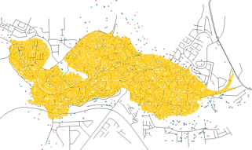

An Agent-Based Model for the Outbreak, Spread, and Containment of Tuberculosis
(Version 1.0)
Developers:
Parth Chopra, Atesmachew Hailegiorgis, and Andrew Crooks
OVERVIEW:
This is an agent-based model of the outbreak, spread, and containment of tuberculosis among the residents of the slum Kibera in Nairobi, Kenya. Agents carry out movement and daily activities based on a variety of factors and the way tuberculosis is spread and treated among them is simulated using an SEIR (Susceptible-Exposed-Infected-Recovered) submodel.
DETAILS:
Tuberculosis (TB) is a global problem affecting over 1.8 billion people and causing 1.5 million deaths annually. TB is an airborne infectious disease caused by the bacterium Mycobacterium Tuberculosis and is fatal if not treated properly. Patients are either diagnosed with a latent TB infection, which is non-contagious and asymptotic, and the TB disease, which is a contagious and chronic disease. TB is an opportunistic infection, and is thus particularly prominent and devastating in immunosuppressed individuals such as HIV/AIDS victims. The disease is spread when a contagious patient emits M. Tuberculosis bacilli and enough bacteria are absorbed by another person for the bacteria to begin reproducing, thus causing a TB latent infection. Only 10% of these infections develop into the TB disease in HIV negative patients, but the rate for development in HIV positive patients with low CD4 counts is 21 to 34 times higher. Over 90% of TB cases affect the pulmonary alveoli in the lungs and it is this Pulmonary TB that is modeled in this ABM. Treatment for TB is a very long process, ranging from 6-9 months of continuous antibiotic treatment. Many patients unfortunately quit treatment in the middle which is allowing the TB to spread.
Tuberculosis is spread much faster in closed, dirty conditions, and thus is very prevalent in developing countries where conditions are subpar at best. One particular area where TB is very rampant is the slum of Kibera in Nairobi, Kenya which is also classified as the largest urban slum in Africa. There is a very high HIV seroprevalence rate in the slum, and that combined with its dilapidated and overpopulated state is contributing to the TB epidemic. This model attempts to simulate the residents of Kibera as individual agents, allowing them to work, play, and interact just as they would in the real world. TB is then introduced to see how the disease is spread among residents. Treatment (and subsequently treatment drop-out) is also simulated to see its effect on the model as a whole.
OPERATION:
This model has a timestep of 1 hour and a spatial resolution of 10x10 meters. The current iteration of the model displays a variety of different perspectives and can be accessed through the Display tab. The main display is the KiberaTBWithUI Display which displays the spatial model and its agents in full. The Activity Chart perspective showcases the percentage of agents at a particular activity. Health Status is a graph showing how many agents are in which part of the SEIR (Susceptible-Exposed-Infected-Recovered) submodel. Health Condition displays how healthy an agent is (divided into the categories of Healthy, Infected with Latent TB, Infected with TB Disease, Contagious, and Dead). A Legend is also provided.
ACKNOWLEDGMENTS:
The authors would like to acknowledge the Center for Social Complexity at George Mason University for providing support for this research.